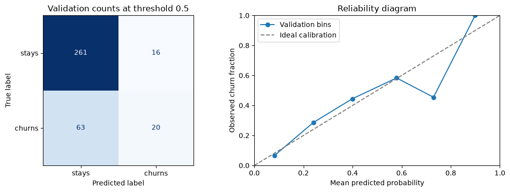
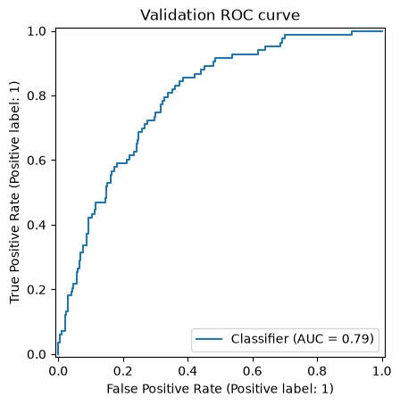

02 — Classification: predicting a binary outcome
We estimate whether a customer churns using generated data. The lesson connects Bernoulli likelihood to probability estimates and then to a separately chosen decision rule; it does not make claims about real customers.

Illustrative sigmoid and decision threshold. A continuous probability and a discrete action are different outputs.
A score, a probability, and an action
The sigmoid is $\sigma(z)=1/(1+e^{-z})$. A logit $z=\log 3$ gives probability $p=0.75$. For a positive observation, its negative log-likelihood is $-\log(0.75)\approx0.288$, and the derivative with respect to the logit is $p-y=-0.25$. Numerically, evaluate the logistic loss as np.logaddexp(0, z) - y*z rather than forming unstable exponentials.
fit(X, y) learns coefficients from rows and labels. predict_proba(X_new) returns probabilities in the order listed by classes_, so inspect that attribute before assuming which column is positive. predict(X_new) turns scores into labels using the estimator's default cutoff, normally 0.5 for binary logistic regression. Changing the decision threshold changes the action, not the fitted probability.
If 10 people are flagged and 6 churn, precision is 6/10. If 8 people churn in total, recall is 6/8. The confusion counts are TP=6, FP=4, FN=2; TN depends on the total population size. Calibration asks a different question: among many cases assigned probability near 0.75, does approximately 75% have outcome 1? Good ranking does not guarantee calibration.
1. Bernoulli likelihood and convex optimization
With linear predictor $\eta_i=\beta_0+x_i^T\beta$ and $p_i=\sigma(\eta_i)$, Bernoulli likelihood is $p_i^{y_i}(1-p_i)^{1-y_i}$. The negative log likelihood per observation is
$$\ell_i(\beta)=\log(1+e^{\eta_i})-y_i\eta_i,$$
and empirical risk is $L(\beta)=n^{-1}\sum_i\ell_i(\beta)$. Differentiating through $p_i=\sigma(\eta_i)$ gives slope gradient $X^T(p-y)/n$ and Hessian $X^TWX/n$, where $W_{ii}=p_i(1-p_i)\ge0$. The Hessian is positive semidefinite, so the logistic loss is convex. Adding $\lambda\|\beta\|_2^2/2$ adds $\lambda\beta$ to the gradient and $\lambda I$ to the slope Hessian block. A positive penalty makes that block positive definite. The intercept is conventionally unpenalized; scikit-learn handles it separately.
2. Load synthetic data
Rows were generated for instruction. They do not represent real customers, prevalence, or intervention effects.
from pathlib import Path
import numpy as np
import pandas as pd
def find_data_file(filename):
"""Search the current directory and its parents for a repository data file."""
for directory in (Path.cwd(), *Path.cwd().parents):
data_path = directory / "data" / filename
if data_path.is_file():
return data_path
raise FileNotFoundError(
f"Could not find data/{filename}. Start Jupyter at the repository root "
"or inside this lecture directory."
)
churn_path = find_data_file("churn.csv")
customer_data = pd.read_csv(churn_path)
print(f"Loaded {len(customer_data)} synthetic rows from {churn_path}")
customer_data.head()
2. Load synthetic data · computed output
Loaded 1800 synthetic rows from F:\Proyectos\RBF-Machine learning\data\churn.csv
2. Load synthetic data · computed output
tenure_months monthly_charge support_calls contract churn 0 10 86.0045 0 annual 0 1 48 63.7697 1 monthly 0 2 42 129.0949 1 annual 0 3 18 62.8151 1 monthly 0 4 59 41.0848 1 two_year 0
3. Training, validation, and final test
We reserve 20% of observations as a final test set. The remaining development data are split into training and validation partitions. Stratification keeps class proportions similar. Cross-validation and regularization selection use training rows; validation selects a threshold under a stated toy cost; the final test set evaluates the frozen model and threshold once.
from sklearn.model_selection import train_test_split
feature_data = customer_data.drop(columns="churn")
churn_response = customer_data["churn"].astype(int)
(
development_features,
final_test_features,
development_response,
final_test_response,
) = train_test_split(
feature_data,
churn_response,
test_size=0.20,
random_state=19,
stratify=churn_response,
)
(
training_features,
validation_features,
training_response,
validation_response,
) = train_test_split(
development_features,
development_response,
test_size=0.25,
random_state=20,
stratify=development_response,
)
print(f"Training rows: {len(training_features)}")
print(f"Validation rows: {len(validation_features)}")
print(f"Final test rows: {len(final_test_features)}")
print("Training class proportions:")
training_response.value_counts(normalize=True).sort_index()
3. Training, validation, and final test · computed output
Training rows: 1080 Validation rows: 360 Final test rows: 360 Training class proportions:
3. Training, validation, and final test · computed output
churn 0 0.768519 1 0.231481 Name: proportion, dtype: float64
4. Pipeline for mixed inputs
Scale numerical features and one-hot encode contract type. Encoding categories as integers would suggest an artificial order. All transformations are part of the pipeline, so cross-validation refits them within each fold.
from sklearn.compose import ColumnTransformer
from sklearn.impute import SimpleImputer
from sklearn.linear_model import LogisticRegression
from sklearn.pipeline import Pipeline
from sklearn.preprocessing import OneHotEncoder, StandardScaler
numeric_columns = ["tenure_months", "monthly_charge", "support_calls"]
categorical_columns = ["contract"]
numeric_preprocessing = Pipeline(
steps=[
("impute", SimpleImputer(strategy="median")),
("scale", StandardScaler()),
]
)
categorical_preprocessing = Pipeline(
steps=[
("impute", SimpleImputer(strategy="most_frequent")),
("one_hot", OneHotEncoder(handle_unknown="ignore")),
]
)
preprocessing = ColumnTransformer(
transformers=[
("numeric", numeric_preprocessing, numeric_columns),
("category", categorical_preprocessing, categorical_columns),
]
)
classification_pipeline = Pipeline(
steps=[
("preprocessing", preprocessing),
("model", LogisticRegression(max_iter=2000)),
]
)
5. Regularization on training rows
The derivation writes mean negative log-likelihood plus a slope penalty $\lambda\|\beta\|^2/2$. For installed lbfgs on unweighted rows, the equivalent lambda is $1/(Cn)$; class and sample weights replace $n$ by their sum. Thus C is inverse strength and its numeric relationship to lambda depends on fitting-row count. Stratified cross-validation chooses C using training rows; validation is reserved for threshold policy, and the final test partition stays untouched.
Read the classifier settings through the likelihood
Preprocessing maps raw rows to numerical coordinates; logistic regression maps each row to a linear logit and applies the sigmoid. The table focuses on options used here; the linked official API page documents additional solver and penalty choices.
| Object or setting | Used value | Effect and tradeoff |
|---|---|---|
SimpleImputer |
median for numeric columns; most frequent for contract | Learns replacements on fitting rows. Missingness itself is not modeled as a separate effect. |
StandardScaler |
center and scale numeric columns | Makes the L2 penalty act on comparable numerical scales and supports stable optimization. |
OneHotEncoder |
handle_unknown="ignore", drop=None |
Encodes contract labels without an artificial order. L2 regularization handles the redundant intercept/category coordinates. |
LogisticRegression |
penalty="l2", solver="lbfgs", fit_intercept=True, max_iter=2000 |
Fits Bernoulli likelihood with a slope penalty. The intercept is unpenalized. Larger iteration limit permits convergence; it does not fix separation or poor scaling. |
C and GridSearchCV |
C in [0.03, 0.1, 0.3, 1, 3, 10]; 5 stratified folds; ROC-AUC; refit=True |
C is inverse regularization strength; smaller C means stronger shrinkage. Search selects ranking performance on training folds, then refits on all training rows. |
For the installed lbfgs solver, unweighted data use the convention $\text{mean Bernoulli loss}+\|w\|_2^2/(2Cn)$, where $n$ is the number of fitting rows and the intercept is excluded from $w$. Thus the derivation's $\lambda$ corresponds to $1/(Cn)$ in this unweighted case. With sample or class weights, the implementation uses their total weight in this scaling. The relationship shows why C changes with data size under a mean-loss formula. See the official LogisticRegression, Pipeline, and OneHotEncoder references.
# Keep the small dataset and solver fixed; vary only inverse penalty C.
# This illustrates shrinkage, not test-set tuning.
from sklearn.metrics import log_loss
small_X = np.array([[-2.0], [-1.5], [-1.0], [-0.5], [0.0],
[0.2], [0.5], [0.8], [1.2], [1.7]])
small_y = np.array([0, 0, 0, 0, 0, 1, 0, 1, 1, 1])
small_query = np.array([[-0.5], [0.5], [1.5]])
logistic_comparison = []
for C_value in (0.05, 1.0, 100.0):
small_model = LogisticRegression(C=C_value, solver="lbfgs", max_iter=2000)
small_model.fit(small_X, small_y)
small_probabilities = small_model.predict_proba(small_X)[:, 1]
logistic_comparison.append({
"C": C_value,
"slope": float(small_model.coef_[0, 0]),
"training_log_loss": float(log_loss(small_y, small_probabilities)),
"probabilities_at_-0.5_0.5_1.5": np.round(
small_model.predict_proba(small_query)[:, 1], 3
).tolist(),
})
pd.DataFrame(logistic_comparison)
Read the classifier settings through the likelihood · computed output
C slope training_log_loss probabilities_at_-0.5_0.5_1.5 0 0.05 0.179824 0.603472 [0.38, 0.423, 0.468] 1 1.00 1.253934 0.359757 [0.238, 0.523, 0.793] 2 100.00 3.766378 0.252702 [0.037, 0.622, 0.986]
The coefficient magnitude and probabilities change because only C changes. The displayed log loss uses the same toy sample used to fit each model, so it illustrates fit flexibility and cannot show which setting will generalize. In the main workflow, C is compared using cross-validation within training rows.
from sklearn.model_selection import GridSearchCV, StratifiedKFold
training_folds = StratifiedKFold(n_splits=5, shuffle=True, random_state=19)
regularization_search = GridSearchCV(
estimator=classification_pipeline,
param_grid={"model__C": [0.03, 0.1, 0.3, 1.0, 3.0, 10.0]},
scoring="roc_auc",
cv=training_folds,
refit=True,
)
regularization_search.fit(training_features, training_response)
selected_inverse_penalty = regularization_search.best_params_["model__C"]
print(f"Selected C: {selected_inverse_penalty}")
print(f"Mean training-fold ROC-AUC: {regularization_search.best_score_:.3f}")
Read the classifier settings through the likelihood · computed output
Selected C: 3.0 Mean training-fold ROC-AUC: 0.771
6. Validation metrics before choosing a threshold
At threshold 0.5, accuracy is the fraction of correct class decisions. Precision is the share of predicted churners who actually churn; recall is the share of churners found. Their harmonic mean is $F_1=2PR/(P+R)$. ROC-AUC is the probability that a randomly selected positive receives a higher score than a randomly selected negative, counting ties as one half. It assesses ranking, not probability calibration or a particular policy.
The default 0.5 cutoff is a reference, not a universal policy. This section reports validation metrics at 0.5 and a majority-class baseline. The final test partition remains untouched.
from sklearn.dummy import DummyClassifier
from sklearn.metrics import (
accuracy_score,
confusion_matrix,
f1_score,
precision_score,
recall_score,
roc_auc_score,
)
best_classifier = regularization_search.best_estimator_
validation_probabilities = best_classifier.predict_proba(validation_features)[:, 1]
validation_predictions_at_half = (validation_probabilities >= 0.5).astype(int)
majority_baseline = DummyClassifier(strategy="most_frequent")
majority_baseline.fit(training_features, training_response)
baseline_predictions = majority_baseline.predict(validation_features)
print("Validation majority-baseline accuracy:",
round(accuracy_score(validation_response, baseline_predictions), 3))
print("Validation metrics at threshold 0.5:", {
"accuracy": round(accuracy_score(validation_response, validation_predictions_at_half), 3),
"precision": round(precision_score(validation_response, validation_predictions_at_half, zero_division=0), 3),
"recall": round(recall_score(validation_response, validation_predictions_at_half, zero_division=0), 3),
"F1": round(f1_score(validation_response, validation_predictions_at_half, zero_division=0), 3),
"ROC-AUC": round(roc_auc_score(validation_response, validation_probabilities), 3),
})
print("Validation confusion matrix [actual rows, predicted columns]:\n",
confusion_matrix(validation_response, validation_predictions_at_half))
6. Validation metrics before choosing a threshold · computed output
Validation majority-baseline accuracy: 0.769
Validation metrics at threshold 0.5: {'accuracy': 0.781, 'precision': 0.556, 'recall': 0.241, 'F1': 0.336, 'ROC-AUC': 0.793}
Validation confusion matrix [actual rows, predicted columns]:
[[261 16]
[ 63 20]]See the validation counts and probability calibration
Rows of a confusion matrix are actual classes; columns are predicted classes. Calibration compares mean predicted probability with the observed positive fraction within a bin. The dashed diagonal is the ideal relation. Bin counts matter: a small bin can depart from the line through sampling variation. This is a validation diagnostic, not a new calibration fit or a test-driven choice.
import matplotlib.pyplot as plt
from sklearn.calibration import calibration_curve
from sklearn.metrics import ConfusionMatrixDisplay
fig, axes = plt.subplots(1, 2, figsize=(11, 4))
ConfusionMatrixDisplay.from_predictions(
validation_response, validation_predictions_at_half,
labels=[0, 1], display_labels=["stays", "churns"],
ax=axes[0], colorbar=False, cmap="Blues",
)
axes[0].set_title("Validation counts at threshold 0.5")
observed, predicted = calibration_curve(
validation_response, validation_probabilities, n_bins=6, strategy="uniform"
)
axes[1].plot(predicted, observed, "o-", label="Validation bins")
axes[1].plot([0, 1], [0, 1], "--", color="gray", label="Ideal calibration")
axes[1].set(xlabel="Mean predicted probability", ylabel="Observed churn fraction",
xlim=(0, 1), ylim=(0, 1), title="Reliability diagram")
axes[1].legend()
plt.tight_layout()
plt.show()
bins = pd.cut(validation_probabilities, bins=np.linspace(0, 1, 7), include_lowest=True)
display(pd.DataFrame({"bin": bins, "probability": validation_probabilities,
"outcome": validation_response.to_numpy()}).groupby("bin", observed=True).agg(
rows=("outcome", "size"), mean_probability=("probability", "mean"),
observed_fraction=("outcome", "mean")))

6. Validation metrics before choosing a threshold · computed output
rows mean_probability observed_fraction bin (-0.001, 0.167] 167 0.081809 0.065868 (0.167, 0.333] 112 0.239926 0.285714 (0.333, 0.5] 45 0.399132 0.444444 (0.5, 0.667] 24 0.579287 0.583333 (0.667, 0.833] 11 0.729602 0.454545 (0.833, 1.0] 1 0.899345 1.000000
Accuracy alone can hide failure to identify the positive class. A majority baseline can score well if non-churn is common while detecting no churners. Compare precision and recall with the actual use case.
7. Choose a threshold on validation, then test once
Suppose a false positive has cost $C_{FP}$ and a false negative has cost $C_{FN}$; correct decisions have zero cost. With calibrated probability $p$, predicting churn costs $C_{FP}(1-p)$ in expectation, while predicting stay costs $C_{FN}p$. Choose churn when
$$C_{FP}(1-p)\le C_{FN}p\quad\Longleftrightarrow\quad p\ge\frac{C_{FP}}{C_{FP}+C_{FN}}.$$
This threshold assumes the probabilities are calibrated for the decision population, costs are known and constant, and decisions have no shared capacity constraint. Here we use a toy ratio $C_{FP}=1$, $C_{FN}=5$, giving a theoretical cutoff $1/6\approx0.167$. We inspect several cutoffs on validation data to see the finite-sample tradeoff and select the lowest estimated cost. Then we freeze the threshold and evaluate the held-out test set once. These illustrative costs do not describe a real intervention.
import matplotlib.pyplot as plt
from sklearn.metrics import RocCurveDisplay
RocCurveDisplay.from_predictions(validation_response, validation_probabilities)
plt.title("Validation ROC curve")
plt.show()
false_positive_cost = 1.0
false_negative_cost = 5.0
threshold_candidates = [0.10, 0.17, 0.25, 0.35, 0.50, 0.65]
threshold_results = []
for threshold in threshold_candidates:
validation_decisions = (validation_probabilities >= threshold).astype(int)
true_negative, false_positive, false_negative, true_positive = confusion_matrix(
validation_response, validation_decisions, labels=[0, 1]
).ravel()
estimated_cost = (false_positive_cost * false_positive
+ false_negative_cost * false_negative)
threshold_results.append(
{
"threshold": threshold,
"flagged": int(validation_decisions.sum()),
"false_positives": false_positive,
"false_negatives": false_negative,
"estimated_cost": estimated_cost,
}
)
validation_cost_table = pd.DataFrame(threshold_results)
validation_cost_table

7. Choose a threshold on validation, then test once · computed output
threshold flagged false_positives false_negatives estimated_cost 0 0.10 252 174 5 199.0 1 0.17 188 117 12 177.0 2 0.25 127 70 26 200.0 3 0.35 71 32 44 252.0 4 0.50 36 16 63 331.0 5 0.65 15 6 74 376.0
The validation table is sorted by the toy estimated cost. We select the threshold from validation and keep it fixed. The final test data will be evaluated once with that threshold.
validation_cost_table = validation_cost_table.sort_values(
["estimated_cost", "threshold"]
)
selected_threshold = float(validation_cost_table.iloc[0]["threshold"])
final_test_probabilities = best_classifier.predict_proba(final_test_features)[:, 1]
final_test_predictions = (final_test_probabilities >= selected_threshold).astype(int)
print(f"Chosen validation threshold: {selected_threshold:.2f}")
print("Final test metrics:", {
"accuracy": round(accuracy_score(final_test_response, final_test_predictions), 3),
"precision": round(precision_score(final_test_response, final_test_predictions, zero_division=0), 3),
"recall": round(recall_score(final_test_response, final_test_predictions, zero_division=0), 3),
"F1": round(f1_score(final_test_response, final_test_predictions, zero_division=0), 3),
"ROC-AUC": round(roc_auc_score(final_test_response, final_test_probabilities), 3),
})
print("Final test confusion matrix [actual rows, predicted columns]:\n",
confusion_matrix(final_test_response, final_test_predictions))
7. Choose a threshold on validation, then test once · computed output
Chosen validation threshold: 0.17
Final test metrics: {'accuracy': 0.656, 'precision': 0.384, 'recall': 0.819, 'F1': 0.523, 'ROC-AUC': 0.772}
Final test confusion matrix [actual rows, predicted columns]:
[[168 109]
[ 15 68]]8. Coefficients as conditional log-odds associations
A coefficient changes fitted log odds by its value for a one-unit increase, or a one-standard-deviation increase for a scaled numerical feature, conditional on the other encoded inputs. Exponentiating gives a model odds ratio. Odds ratios are not risk ratios, and observational coefficients do not establish causal effects.
encoded_feature_names = best_classifier.named_steps["preprocessing"].get_feature_names_out()
log_odds_coefficients = pd.Series(
best_classifier.named_steps["model"].coef_[0],
index=encoded_feature_names,
)
log_odds_coefficients.reindex(
log_odds_coefficients.abs().sort_values(ascending=False).index
).head(10).round(3)
8. Coefficients as conditional log-odds associations · computed output
category__contract_monthly 0.860 category__contract_two_year -0.752 numeric__support_calls 0.602 numeric__monthly_charge 0.598 numeric__tenure_months -0.559 category__contract_annual -0.099 dtype: float64
Takeaways
- Train on one partition, select regularization with training-only cross-validation, and select a decision threshold on validation data.
- Evaluate the frozen model and threshold once on final test data.
- Report class counts, confusion matrix, and metrics relevant to the intended decision.
- Generated-data performance does not establish real customer outcomes or causal effects.